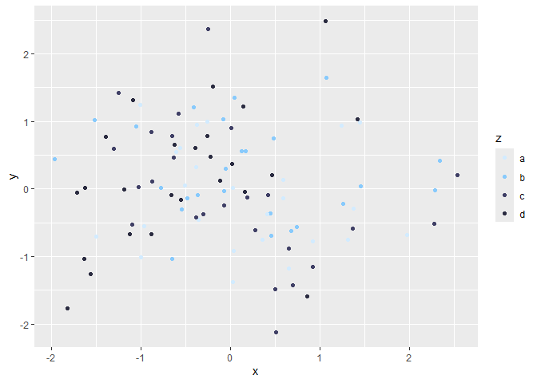
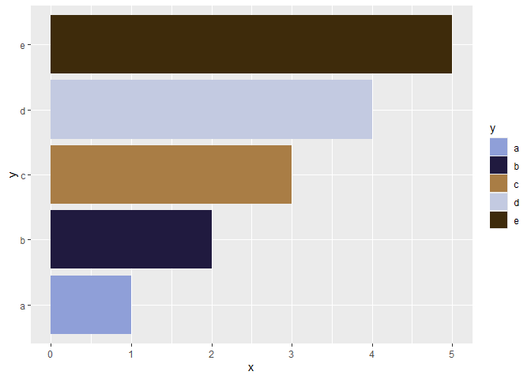
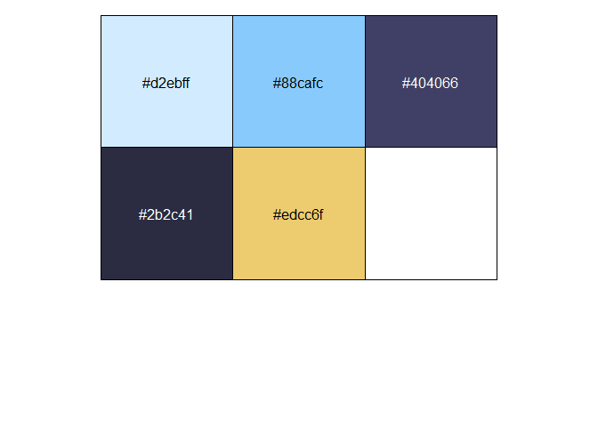
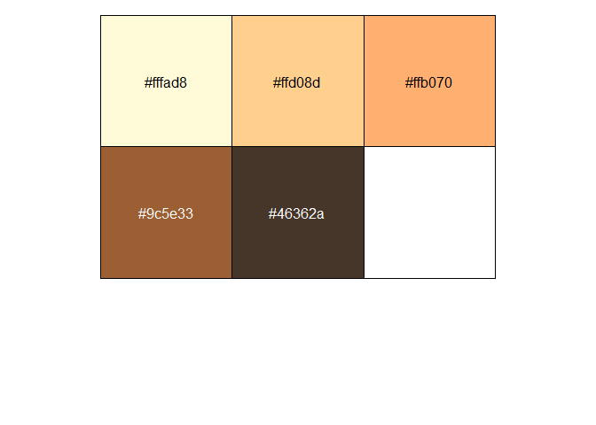
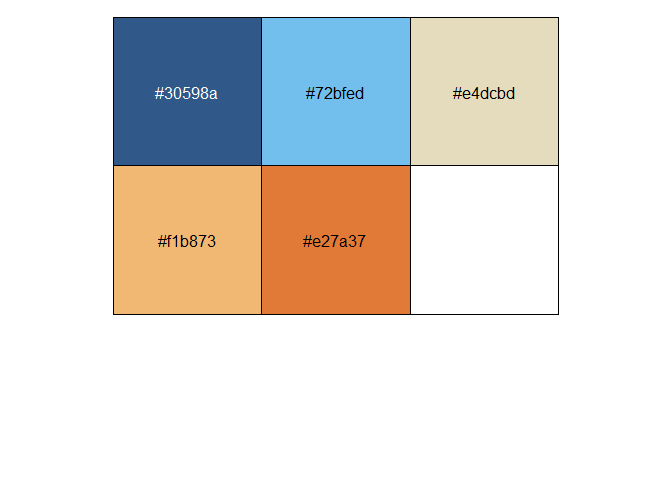
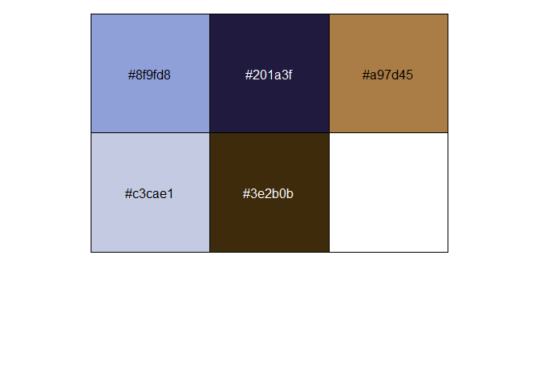

blueycolors provides color palettes and ggplot2 color and fill scales inspired by Bluey
Installation
You can install blueycolors from Github via:
devtools::install_github("ekholme/blueycolors")Usage
There are probably 2 main uses for this package:
- Extracting palettes and their associated hex codes
- Using these palettes as color or fill aesthetics in ggplot
To extract palettes & hex codes, use the bluey_palette() function:
library(blueycolors)
bluey_palette("bluey")
#> [1] "#d2ebff" "#88cafc" "#404066" "#2b2c41" "#edcc6f"To use the palettes in ggplot, use scale_color_bluey() and scale_fill_bluey() for discrete scales or scale_color_bluey_c() and scale_fill_bluey_c() for continuous scales.
library(ggplot2)
tmp <- data.frame(
x = rnorm(100),
y = rnorm(100),
z = rep(c("a", "b", "c", "d"), 25)
)
ggplot(tmp, aes(x = x, y = y, color = z)) +
geom_point() +
scale_color_bluey()
tmp2 <- data.frame(
x = 1:5,
y = c("a", "b", "c", "d", "e")
)
ggplot(tmp2, aes(x = x, y = y, fill = y)) +
geom_col() +
scale_fill_bluey(option = "socks")
There are currently 4 different palettes available, but the “heeler” option probably provides the best contrast.
Palettes
Bluey (default)
library(scales)
show_col(bluey_palette("bluey"))
Chilli
show_col(bluey_palette("chilli"))
Heeler
show_col(bluey_palette("heeler"))
Socks
show_col(bluey_palette("socks"))